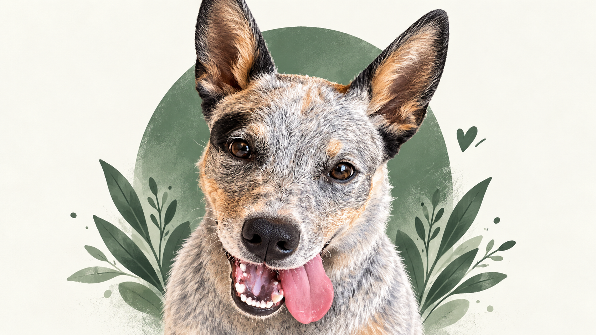
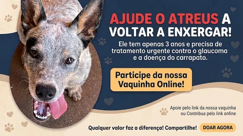

Um pequeno gesto.
Uma grande chance
para o Atreus.
Ele tem só 3 anos e precisa de ajuda para tratar o glaucoma e aliviar a dor. Vamos cuidar dele juntos?

Por mais dias felizes. ♡Atreus precisa da nossa ajuda.
O Atreus é o cachorro de Henzo e tem apenas 3 anos. Segundo o relato da campanha, ele foi diagnosticado com glaucoma em ambos os olhos, uma condição que aumenta a pressão intraocular. Está com dores intensas e corre o risco de perder a visão.
Ele também está muito debilitado, com forte suspeita de doença do carrapato. A campanha busca apoio para iniciar o tratamento com colírios de alto custo e antibióticos especializados.
Qualquer contribuição, por menor que seja, faz toda a diferença.Henzo · organizador da campanha
Cuidado em cada etapa.
Consultas oftalmológicas
Acompanhamento especializado para cuidar dos olhos do Atreus.
Exames
Investigação e avaliação do seu estado de saúde.
Medicamentos
Colírios e antibióticos conforme a orientação veterinária.
Ver imagem publicada na campanha

Juntos, em cada etapa.
Acompanhe as atualizações sobre o tratamento do Atreus pelo meu Instagram.
Acompanhar @renzorfx ↗Compartilhar também é cuidar.
Ajude a história do Atreus a chegar a mais pessoas.